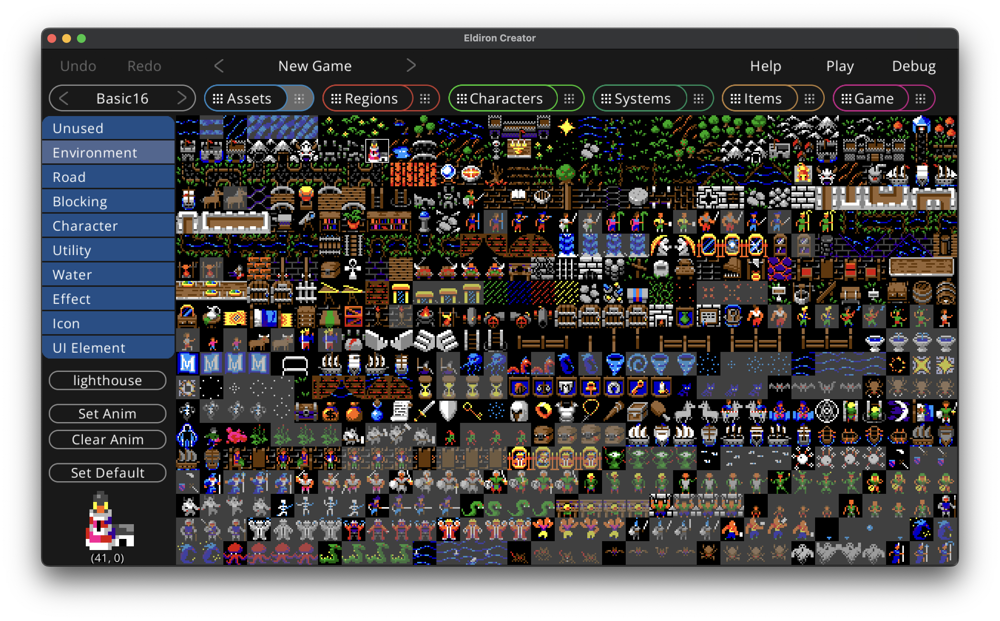
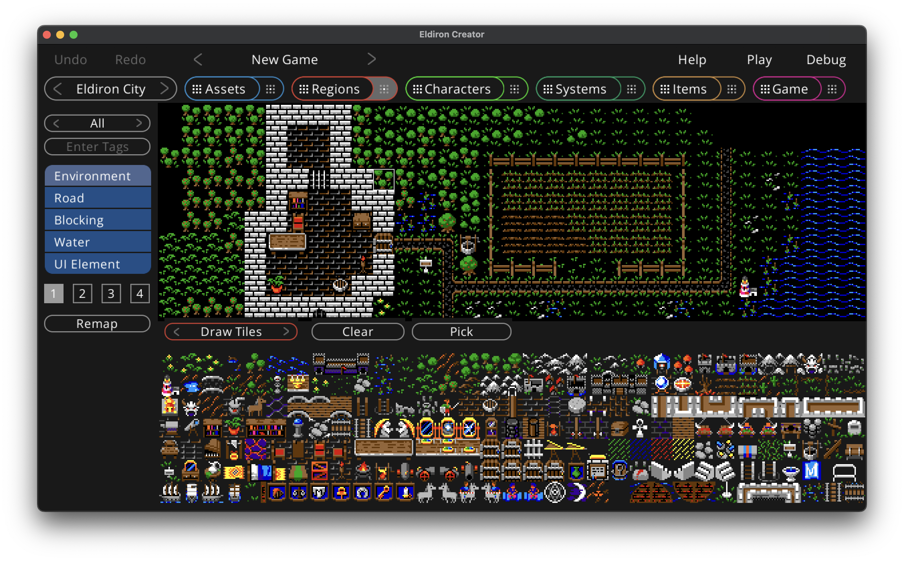

Introduction
Eldiron is a cross-platform creator for classic role-playing-games (RPGs). It's main aim is to create games similar to the RPGs of the 80's and 90's but with modern features as well as support for single and multi-player experiences.
Eldiron consists of Eldiron Creator, a desktop application available for macOS, Windows and Linux, and various clients (and a server) which will run the created games on nearly any device.
Eldiron v1.0 is under active development and scheduled for Q1 2023. V1 will be able to create games similar to Ultima 4 and 5 with 3D retro regions and dungeons scheduled for v1.5.
Later goals are support for more perspectives (like isometric) and much more.
Eldiron is open source (licensed under the MIT) and 100% free to use.
Installation
Installing from source
Eldiron is written in Rust, to run it you have to install Rust and its package manager cargo. Please follow the instructions on this page.
After you successfully installed Rust, clone the repository (or download the source via a .zip file), open a terminal, navigate to the Eldiron directory and start Eldiron Creator with cargo run --release.
Steam
Once Eldiron is in pre-release it will be available on its Steam page.
Projects
Eldiron Creator stores it's game projects in the Eldiron directory in your desktops Documents directory. When first started Eldiron will ask for the name of your first game project (the default name is New Game) and create the project with the default starter content.
When Eldiron is not running, you can rename game folders to change the name of the game, delete or copy game folders.
The design goal for Eldiron projects was to make sharing of game content between games as easy as possible. Most game components are saved in individual files to allow sharing them with others. Each section of this book will mention where the corresponding game data is saved.
Game projects consists of two directories: assets and game.
Assets Directory
The assets directory contains all static data of the game.
-
The audio directory contains all audio assets of your game. Only WAV files are currently supported.
-
The fonts directory contains all fonts used by the game, to install new fonts just copy new fonts into this directory and on the next restart of Eldiron they will show up in the relevant font selectors.
-
The tilemaps directory contains all tile-maps. Tile-maps are PNG images which contain game tiles. Copy new images into this folder and they will show up in the Tiles view upon restart. Eldiron will create .json files for each tile-map which include the user defined meta data for the tiles.
The name of each file represents the in-game name of the represented entity. For example you can just rename a character file to rename the character itself. Eldiron will perform the same action when asked to rename a character.
Game Directory
The game directory contains all user created data for the game, such as regions (drawn via tiles in the region editor) or character behavior graphs.
Each folder name represents the type of game content it contains and matches the user interface sections in Eldiron and in this book (i.e. regions, characters, systems and items) with the game behavior located directly in the game directory.
You can share individual files with others, but there are some dependencies you have to be aware of:
-
Region files need the tile-maps used to draw the region in the assets/tilemaps directory.
-
Systems behavior files may be dependent on variables defined in the characters which invoke them.
Node Graphs & Scripting in Eldiron

Node graphs in Eldiron are a mix between a behavior node system and scripting. Eldiron tries to combine the best of both worlds. The overall flow of execution is defined via nodes, while parameters of nodes are expressions or scripts which can be as complex as needed.
This has the advantage that you can easily visualize the overall flow of execution in a graph while adding details to behavior via node parameters which do not clutter up the node graph.
For example in the above screenshot the Go Raiding behavior tree executes the Pathfinding node which guides the character to a certain position or area in a region.
While the pathfinding is ongoing, i.e. the character did not reach its destination yet, the node connected to the terminal on the right side of the pathfinder node is executed. If the character successfully reached its destination the green OK terminal at the bottom of the pathfinding node is executed, if an error occured, for example the way to the destination is blocked for a longer period of time, the red ERROR terminal at the bottom of the pathfinding node is executed.
The Speed Delay property of the pathfinding node is a number value between 0 (no speed delay, which is a full move per game tick) and the number of game ticks to be skipped while the move is ongoing..
You could just set the expression to
#![allow(unused)] fn main() { 2 }
for the speed delay.
Or as we do in the above screenshot you could set it to
#![allow(unused)] fn main() { 1 + d2 }
which is 1 plus a dice throw of 2 (a random number of one or two) which gives a bit of a random speed, as this expression is evaluated for every movement the speed varies while the character is walking from tile to tile.
Or if things get more complex you could check if the character is on horseback or not or which usage role the current tile the characer is standing on has (for making the character walk slower in forests or hills).
To understand node graphs please read about behavior trees, control flow and the scripting subsystem.
Behavior Trees
Every node graph in Eldiron (except area nodes which are a bit more simple) utilizes behavior trees to break up the overall behavior into smaller, easily understandable chunks (trees).
A behavior tree is just a node with several terminals at the bottom which get executed from left to right. You typically rename the behavior tree to indicate what behavior the tree is executing, for example Go Raiding, or Talk and Combat.
In a programming language behavior trees would be similar to functions.
Every behavior tree node has an Execute property which indicates when the tree is executed:
- Always. The behavior tree is always executed if the graph is not locked.
- On Startup. The behavior tree is only executed once when the graph is created.
- On Demand. The behavior tree is executed on demand.
Behavior trees perform the AI for non-player-characters (NPCs) and connect input commands from the Player character to the right player action (see the characters section).
All behavior trees in a graph are listed as tabs at the top of the graph. Select the given behavior to edit it.
Active vs. Passive
There are some behavior trees which have a passive behavior and need to end with an " (P)". For example lets assume you have a healer character named Antony. When your player performs a custom action in a given direction Eldirons node system checks if the character (or item) located in the given direction has a behavior node tree called "ActionName (P)". For example lets say the player looks towards Antony and you want to send a message to the player:
- Create a new behavior tree for Antony (by dragging a Behavior Tree) node into the graph.
- Rename the node to "Look (P)"
- Attach a Message node to it with a status message like "You see Antony, a famous healer.".
Make sure that the behavior tree is set to execute "On Demand".
One big difference between passive behavior trees and normal ones is that passive behavior trees use the context of the caller instead of their own. You do not want to send the message to Antony but to the player who is looking in his direction. Thats why the convention with the naming is important to mark this difference.
The same look behavior is also possible with area nodes by utilizing the Action node. For example if you look at a sign and send want to send a message to the player. For more information about area nodes see the edit areas section.
Behavior Trees vs System Trees
Creating behavior trees for characters is fine. But if you want to implement general systems like crafting or magic you do not want to implement them again and again for every player character in the game. This is where system trees come into play. Go to the systems view and create behavior trees for a given system like you would for characters. Now in your characters you can call these trees with the Call System node. They execute the same way as would your local trees with the same character context. This way you can create re-usable systems for your game.
Control Flow
A behavior tree executes from top to bottom. It all starts with a behavior tree node. You can connect up to 5 nodes to the to its terminals at the bottom.
Nodes have input and output terminals. Terminals on the left and top are input terminals. Terminals on the right and bottom of the node are output terminals.
In Progress
Nodes, like the Pathfinder node, use the terminal on the right to indicate an action in progress. The pathfinder node will execute the right terminal when the character did not reach it's destination yet.
Failure and Success
Some nodes support red failure and green success terminals to indicate failure or success of the nodes function. The pathfinder node will execute the green success terminal if the character has reached its destination. The red failure terminal if the way to the destination is blocked for a longer period of time.
Another example is the Expression node which executes failure or success depending on the evaluation of the boolean expression script (false or true).
Single Output Terminal Nodes
Most nodes just support a single output terminal at the bottom when the node function cannot fail. For example sending a Message to the player.
When you debug a game, the graph will visualize which node connections are being executed by coloring executed connections in orange.
Scripting
Every character (and optionally item) have their own script scopes, so you can create variables and control node flow via expressions.
Scripting is widely used inside Eldiron, as many node parameters are script or expressions. The Script node executes scripts and the Expression node controls the node flow by either succeeding or failing depending on the boolean return value of the script expression.
Every character should have a startup tree which defines the variables of the character, for example
#![allow(unused)] fn main() { let HP = 18 + d2; // 18 plus a dice throw of d2 (a value of 1 or 2) let HP_MAX = HP; let STR = 10; let EXP = 0; let LEVEL = 1; ... }
The variables you define make up the attributes of your character. It is up to you if want to create a complex character system or just a minimal one. The example demo project which gets created for a new project is designed to get you started and is not too complex.
The same is true for monsters, you can make them very simple or very complex, the choice is yours. In the early RPGs monsters just had some HP and created random damage. But that was because computers were slow and having a few dozen orcs with fully worked out character systems would have been too slow. This limitation does not exist anymore today.
Apart from character attributes you can of course define as many helper variables as needed.
Note that the d2 dice throw in the example script above is built into the scripting language, you can just use any dx value (where x is any number) to get a random value between 1 and x (inclusive).
In an expression node you could check if your character has an experience value greater than 1000 with for example
#![allow(unused)] fn main() { EXP > 1000 }
which would follow the green success terminal in the control flow if it is true or the red failure terminal if the character has less than 1000 experience points.
Special Variables
The node system needs to know which variable name is used for your characters hit points as it needs to check if your character died or not or how much gold it has. These variable names are defined in the game settings. When you change one of these special variable names, make sure to change them in all your scripts.
Another special variable is the alignment variable. It is set automatically by Eldiron based on your selection for the characters alignment in the character node graph. It is set to 1 for heroes, 0 for neutrals and -1 for monsters. You can of course also use your own more complex alignment system. The alignment is one of the variables often used in the Lookout node.
For more information about scripting please see the scripting reference, especially the character scripts.
Mechanics
While the behavior trees are very flexible, there are some fixed mechanics which are important to understand.
Dealing and Taking Damage
Your character can deal damage via the Deal Damage node. The amount of damage dealt is returned by the numerical expression parameter Damage of the node. This expression can take any kind of bonuses of the character class or gear into account or just do a d10 or similar if your character system is very simple.
However the deal damage node by itself does not do any damage, it will look up and execute the onHit behavior tree on the receiving character and execute it. This tree should contain a Take Damage node which has an Reduce By parameter which calculates the amount to reduce the incoming damage. This expression can again any bonuses from the character class or gear into account to reduce the damage. After that the node applies the incoming damage (which was reduced by the calculated amount) and applies it to the hit point variable specified in the game settings (HP by default).
If the character succeeds to take damage (i.e. does not die which means the hit points are greater than 0) it executes the green success terminal of the take damage node, if the hit points are 0 the red failure terminal is executed. See Dying and Resurrection below.
If a character does not have a onHit tree or that tree does not have a take damage node, the character will never take damage!
Healing and Taking Healing
The healing process is very similar to dealing damage. The Heal node is used to specify the amount to heal, it than calls the onHeal tree on the receiving character which has to call the Take Heal node to apply the healing.
Similar to the damage system, if a character has no onHeal tree or does not call the take heal node it will not be able to receive healing.
Dying and Resurrection
If the Take Damage node fails it means your character should do. You can set the state of the character via the Set State node. Purging the character means it will be deleted from the system. For a player character set it to Killed so that the character is not purged but can be resurrected later.
The example demo teleports the player to a healer who will resurrect him using the set state node. The healer uses the Lookout node to find character who can be resurrected. See Targeting below.
Targeting
Players target other characters explicitly by performing some action in a given direction. But how do non player character target other characters ? The answer is the already mentioned Lookout node. This node searches all characters in the vicinity and checks if the character fits the expression. You can for example check its alignment. The node also allows checking the state of the character (Normal or Killed). For details please see the documentation of the Lookout node.
If the lookout node finds a fitting character, it will set that character as the target. That means that nodes which work on a target, like Close In, Deal Damage or Heal, will target that character.
You can un-target using the Untarget node (for example if the target is too far away).
Congratulations, you understood the most complex mechanics in Eldiron!
Some examples which may be useful to understand specific workflows.
Lookout / Random Walk / Deal Damage

This example is for a monster which random walks the area and attacks a hero (if it finds one).
First, it checks if it has a target already.
If not
- Perform a Random Walk.
- Lookout for a hero (alignment > 0) to attack. In this example we do not use the return value as we check again if we have a target in the next game tick. Remember that the Lookout node automatically sets the target if it finds a fitting character.
If yes
- Untarget the target if the distance is too great (here a distance of 3 tiles)
If un-target returns a failure, we still have a target (i.e. we did not un-target it):
- Close In to the target, to a distance of one (melee weapon).
If close in returns success, meaning we are next to the target
- Deal Damage of
d3.
Taking Damage: onHit
This example is for a monster which takes damage and respawns if killed. Note that the onHit tree is called by the attackers Deal Damage node.
First, we execute the Take Damage node, here we reduce the damage by a dice throw of d3.
If we take the damage successfully we play an effect animation on the character using the Effect node.
If we do not take the damage successfully, we die
In this case
-
Drop all our inventory as loot for the attacker using the Drop Inv. node.
-
Set the state of the character to purged with the Set State node. This allows the system to re-allocate the memory used by this character.
-
Respawn the monster after some time using the Respawn node. Note that this node has no further outgoing terminals, it is the end of the line for this character instance.
User Interface of Eldiron Creator
Eldiron Creator has two main toolbars.
The Control Toolbar
The top one is called the control toolbar and has these functions:
- Undo / Redo. The undo / redo state depends on the current view. Not all views have undo support.
- Project Switch. You can switch through your current game projects by clicking the < > arrows.
- Help. Opens this book on the currently displayed view section.
- Play. Plays the game.
- Debug. Debugs the game. This is mostly useful in the Region, Character and System views as you can visually see the node connections which are currently executed. Also you can monitor the variables in the Characters view as they always reflect the in-game state.
The View Toolbar
You can select the current view in the view toolbar (Assets, Regions, Characters, Systems, Items and Game). All views have two states, an overview state which shows all elements in an overview (activated by pressing the left part of the view button) and the detail state which shows an editor for the currently selected element (activated by pressing the right part of the button).
All views also have keyboard shortcuts between '1' to '7'.
To the left of the view buttons is also an element switch, you can use its < > buttons to switch through all available elements in the current view (or use the tab key to cycle through the currently visible elements).
Assets View: Overview
In the assets overview you can add to and edit the assets of your game.

The assets overview displays a node for each asset present in the assets directory.
Assets currently are:
-
Audio files.
-
Tile-maps. The icon displayed for the node is the tile set as default tile in the details view. You can set the grid size of the tile-map (the size of the square tiles in the tile-map) by clicking on the Grid Size property of the node.
You can edit the details for a given asset by clicking the preview thumbnail of the asset node you want to edit.
Details: Tile-maps

The tile-maps details view lets you assign meta-data for each tile in the tile-map. This is an important step as Eldiron needs to know how each tile is supposed to be used in-game.
You can click on a tile to select it (or multi-select tiles by clicking and dragging the mouse over a range of tiles).
The most important step is to give each tile a usage role, this can be one of:
- Unused - This tile is ignored and will not be shown in the region editor.
- Environment - This is the default tile type for any kind of non blocking terrain. Use it for grass, floors etc.
- Road - Same as Environment but the AI in the Pathfinder node will prefer road tiles over environment tiles.
- Blocking - Every Environment tile which is not accessible to the player, like rocks, mountains, walls etc.
- Character - Character tiles, like animation tiles for a warrior.
- Utility - Utility character tiles. Like a ship or a horse.
- Water - Water tiles. Tiles where a ship can go.
- Effect - Effect tiles, like an explosion.
- Icon - In game icons for inventories etc (swords, armor etc.).
- UI Element - UI elements for screens and widgets.
When you click the Enter Tags button you can assign command separated tags to a tile, like cupboard or waterfall. Tags are always lower case. Tags can be used to quickly find tiles or to auto-convert regions to different tile-maps (not yet implemented).
By clicking the Set Anim button you create an animation for the first tile in the selected range. The other tiles will be set to Unused by default.
The Clear Anim button will remove an animation sequence form the currently selected tile.
The Set Default button will set the currently selected tile as the default tile of the tile-map, it will be shown as the tile-map thumbnail in the overview.
Regions View: Overview
Regions in Eldiron can be towns, dungeons, the world itself, i.e. anywhere the characters can go. You can paint regions with the tiles you defined in the assets view. The behavior of tiles depends on the properties you set for the tiles in the tile-map details view.
If you want to create a new region you can simply drag and drop the Regions item on the left into the overview. You can rename and delete regions using the context menu of each region node (located in the upper right of each node).
Opening the region details is as simple as clicking the preview thumbnail of the region node you want to edit.
Region Details View
The details view has different modes which allow you to edit different aspects of a region:
- Draw Tiles. The drawing mode. Hotkey: 'D'.
- Edit Areas. Define areas and edit their behavior. Hotkey: 'E'.
- Characters. Place character instances in the region. Hotkey: 'C'.
- Settings. Edit the settings of the region. Hotkey: 'S'.
You can select the mode by clicking on the mode widget (which has a redish color) or by pressing the hotkey of a mode.
Drawing Tiles

In the bottom of the view you have the tile selector. The tiles being shown depend on the currently selected valid usage role, which is one of Environment, Road, Blocking, Water and UI Element.
You can filter which tiles do show by:
- Cycling throw the tile-maps using the button at the top of the left sidebar (All shows the tiles of all tile-maps which is the default).
- Entering a tag, for example door, would only show tiles with a door tag.
While drawing you can select which layer to draw on, Eldiron supports 4 layers of transparency, with layer one having the lowest transparency level and four the highest.
The Remap buttons remaps all tiles in the region. This is necessary because the usage role of the tile is saved in the region itself. If you change the role of a tile in the assets view, for example from an environment tile to a blocking tile, you need to remap the region to update the role of the tile.
While the the Clear button is checked Eldiron clears the clicked tile instead of drawing on it. The Pick button selects the tile at the currently clicked location so you can use it for drawing. The cleanr pick buttons of keyboard shortcuts of C and P.
Edit Areas
Areas are a group of tiles in a region which share common behavior. For example they may teleport the character entering it to a certain location, set a trap, open a door or send a message if you are near a sign. Apart from assigning behavior itself, areas can also be used from character nodes to go to a certain area or walk along a path defined by the area tiles. And lastly they can also modify the visual appearance of a tile, like for example emitting light.
You can cycle through the areas in your region by using the button next to the red Edit Areas button. Pressing the Add Area button will create an empty new area (that means no tiles are assigned to this area yet). You can Delete and Rename areas by pressing the respective button.
Clicking on a tile in the region will add the tile to the current area if the Add Tile mode is active, if it is set to Remove the tile will be removed from the area and if it is set to Pick it will select the area the clicked tile belongs to.
Behavior Nodes
To add behavior to an area just drop nodes from the left sidebar into the graph below the region view. Area nodes work a bit different than other nodes in Eldiron. They do not utilize behavior trees but rather use nodes which query the current occupation state of an area, for example if the player (or another character) just entered or exited the area. These nodes have a green color. You can add multiple green nodes to an area and connect area behavior to them.
Characters

When in the character mode, clicking on a tile in the region will create an instance of the currently selected character at the tile. You can select the characters in the character view below the region.
Characters are added if Add Instance is active, if Remove is active the clicked instance of a character is removed.
Missing features for v1.0:
- Name character instances.
- Optionally call a character script function on initialization (to set random character attributes or level).
- Define which character instance is the debug instance which is shown in the character view.
Settings

In the settings you can tune many region specific settings.
#![allow(unused)] fn main() { // The background color of the region background = #000000 }
A hex color used as the background color of the region while drawing. Default is #000000, i.e. black.
#![allow(unused)] fn main() { // Use "tile" for tile based movement or "pixel" for sub-tile movement. movement = "pixel" }
Defines the movement mode, tile based movements directly moves characters from one tile to the next, while pixel based movements create a smooth animation between tiles.
Characters View: Overview
The characters view allows you to define characters, or character templates for non-player-characters. It utilizes nodegraphs and behavior trees to implement character AI. Please read these chapters first.
A special case is the Player character which does not implement AI but defines how input commands are mapped into behavior actions. The player character is always the first character in the overview and cannot be deleted.
To create a new character drag and drop the character item from the left sidebar into the overview. You can rename and delete characters via the nodes context menu. Click on the node thumbnail to open the characters detail view.
Characters View: Detail View

Non-Player Characters
Player Character

Player based characters map their behavior tree names to actions send from screen scripts. They basically define what todo for every user based action.
For some of these actions there are specific nodes available which handle the given action, like the Move, Take or Drop nodes. These nodes perform the action and return success or false, depending on the outcome.
The screenshot above shows an example for the Move command.
For all other actions please use the Action node, for example for Look or Use. The action node searches for a region, item or character with an behavior tree of the same name and execute that tree.
As the actions send from the screen scripts are user defined, you can easily map any action command to the behavior trees / actions of the same name, allowing a very easy and modular way to build up custom character behavior.
Special Message Shortcuts
-
${DIRECTION} is the shortcut for the direction of the user initiated action. In the above screenshot we use it to send back "Move ${Direction}" or "Move ${Direction} - Blocked" messages back to the user.
-
${SUBJECT} is the subject of the action. For take and drop actions it is the name of the item we take or drop. For example you can send something like this back to the user on success on the take action: "You take: ${SUBJECT}.".
Systems View: Overview
Systems are node graphs which characters can invoke to perform certain kind of behavior, like combat or crafting or any other kind of action.
Systems make it possible to have a modular set of graphs which can be invoked at any time from any character. Internally they work the same as character graphs.
Items View: Overview
The items view allows you to create in-game items. Just drag and drop the Item from the list into the graph to create a new in-game item.
As always, click on the preview area to open the detail view.
Items View: Details

The item details view adds behavior to your items utilizing nodegraphs and behavior trees.
When a character performs an action on an item or a direction, let's say a "Look" action, the behavior tree of the same name in the item is executed. You can use this to send messages back to the user ("You see a burning torch"), ignite your torch using the Light node and execute more complex scripts if your item has state.
In the top left corner you have a permanent node which displays basic settings for the item: The default tile of the item and the item settings.
Item State

If you set the item state to true in the item setting you can use scripts and expressions in your items as they have their own variable scopes.
In the above screenshot we have a Startup behavior tree which sets a "is_burning" boolean variable. This is the state of the torch, and we can use this state in the "Look" tree to send the appropriate message back to the user ("You see a torch. Use it to ignite it." or "You see a burning torch."). In the same way you can switch the state in the "Use" tree and adjust the tile for the item and it's light source settings.
Item Settings
In the item settings you can define basic properties of your item.
#![allow(unused)] fn main() { // Type of the item, either "Weapon", "Gear" or "Tool" item_type = "Tool" }
The item typpe defines the role of the item, "Gear" and "Weapons" can be placed in the appropriate UI slots, everything else is a "Tool".
#![allow(unused)] fn main() { // true if the item should have it's own state (variables). state = true }
If the item has state, it has it's own variable scope, see item state.
#![allow(unused)] fn main() { // Value greater than 1 if item should be stackable. Only for items without state. stackable = 1 }
Your item is stackable if this value is greater than 1. Stackable items cannot have a state and are meant for basic inventory for crafting.
#![allow(unused)] fn main() { // True if the item is static, i.e. cannot be picked up (campfire etc.). static = true }
If you set the item to static, it cannot be picked up by the user. Imagine a campfire for example. Static items are a great way to add interactivity to the environment. Note that static items and areas have overlapping features. Using static items has the advantage that you can just simply instantiate items as many times as you like, whereas placing tiles and defining areas and behavior for them takes a bit more time and effort (but allows for more customized behavior).
#![allow(unused)] fn main() { // The sales price of the item. 0.0 if the item cannot be sold. price = 0.0 }
The sales price of the item in your game currency (i.e. gold). This is a float value so that your game can optionally support a secondary currency in the fractional value of the float (like for example silver).
See also the currency properties in the game settings.
Game View

The game view graph handles the overall game logic, which, in an RPG, basically means what is the visible content of the game right now.
The game nodegraph works the same as other graphs by utilizing behavior trees.
The visible content of the game is handled by screen nodes and their scripts.
The game view works differently than the other views in that it does not have a detail view, as there is only one game graph. Instead the detail button will show the game settings which define global game properties.
Screen nodes and their screen scripts play an important role as they draw the content of your game as well as define user interaction. You can read more about screen scripts in the reference here.
Game Settings
The game settings define global poperties for your game. Here is a list of all supported properties.
#![allow(unused)] fn main() { // The screen size of the game window. screen_size = 1024, 608 }
This setting defines the size of your game window.
#![allow(unused)] fn main() { // The default square tile size when drawing game content. square_tile_size = 32 }
The size of a square tile when drawing game content.
#![allow(unused)] fn main() { // The variable name of your primary currency. "gold" by default. primary_currency = "gold" // The variable name of your (optional) secondary currency. "silver" by default. secondary_currency = "silver" // How much secondary currency makes up one primary. 100 by default. secondary_to_primary = 100 }
The variable name of your primary currency. You would assign currency to your character via a startup tree, like rust let gold = 10;. The primary_currency setting lets Eldiron know which variable in the character scope defines the primary currency.
#![allow(unused)] fn main() { // The name of the characters hitpoints variable. hitpoints = "HP" // The name of the characters maximum hitpoints variable. max_hitpoints = "MAX_HP" }
The values define the name of your characters hitpoint and maximum hitpoints variables. The node system needs to know what script variables are used to calculate damage, when you character is dead or what is your current maximum hitpoint value when being healed. If you change these values in the settings make sure to change them in your scripts.
Scripting
Scripting is an important building block for many tasks in Eldiron.
It provides the foundation of the node system and with screen scripts you define both the visible content of your game as well as the user interaction.
The scripting engine in Eldiron uses Rhai, a Rust based, easy-to-use yet powerful scripting language. Please see the Rhai Book for furher information on Rhai and it's syntax.
Character Scripts
Character scripts are script nodes or node expression parameters, many parameter of a node are expressions which either expect a boolean or numerical return value.
Startup Trees
During startup you can define character attributes in your startup tree as discussed here.
Dice throws
You can easily throw a dice and get a random value by using dvalue, like
#![allow(unused)] fn main() { d14 }
would return a random value between 1 and 14. This works with very number.
Handling character inventory
Each character has an inventory class available available inside the script scope.
You can add inventory items to the character
#![allow(unused)] fn main() { inventory.add("Torch", 1); }
where Torch is the inventory item and 1 the amount of items you want to add. The name of the item has to be name of an item created in the items view.
You can iterate your current inventory with
#![allow(unused)] fn main() { for item_index in 0..inventory.len() { let name = inventory.item_name_at(item_index); let amount = inventory.item_amount_at(item_index); } }
Gold
The big exception to the inventory is gold. You can just assign gold to your character by creating a variable
#![allow(unused)] fn main() { let gold = 10; }
And of course you can freely modify the variable in your scripts.
The Sell node autmatically sells and transfers items between buyers and sellers and also handles the money transfer.
The Drop Inv. node drops all or some of your inventory items (mostly used on death).
When rendering gold in the game world the icon you specify in the Gold item specified in the item view is used.
If you want to change the name of the gold variable to something else you have todo so in your game settings.
Screen Scripts
Screen scripts define the visible content of your game as well as the player interaction. Screen scripts are part of screen nodes in the game view.
Screen scripts consists of several functions which will be called by Eldiron for various tasks:
#![allow(unused)] fn main() { fn init() { // Initialize your screen script here. "this" is the global context. // this.width and this.height are set by default to the game settings screen_size. // Default is 1024 x 608. // this.tile_size is set to the game settings def_square_tile_size value. // Default is 32. Change it here for custom tile sizes. this.my_var = 5; } fn draw() { // Draw the content of the screen } fn key_down(key) { // Key press event if key == "w" { // Do something } } fn touch_down(x, y) { // The mouse has been pressed or a touch event occured at the specified coords. } }
The sub-chapters discuss all of Eldiron's script functions available to you in screen scripts.
Behavior Tree
A behavior tree is a node with several terminals at the bottom which get executed from left to right. You typically rename the behavior tree to indicate what behavior the tree is executing, for example Go Raiding, or Talk and Combat.
In a programming language behavior trees would be similar to callable functions.
Every behavior tree node has an Execute property which indicates when the tree is executed:
- Always. The behavior tree is always executed if the graph is not locked.
- On Startup. The behavior tree is only executed once when the graph is created.
- On Demand. The behavior tree is executed on demand.
Behavior trees perform the AI for non-player-characters (NPCs) and connect input commands from the Player character to the right player action (see the characters section).
All behavior trees in a graph are listed as tabs at the top of the graph. Select the given behavior to edit it.
Expression
Executes the given script which is expected to return a boolean value.
Returns
- Success. If the expression returns
true. - Failure. If the expression returns
false.
See also
Scripting, Scripting Reference.
Has Target ?
Intended for NPCs.
Returns
Success if the character currently has a target, failure otherwise.
Light
Sequence
Audio
Call Behavior
Executes the behavior tree of the given name.
Parameter
- System Name. The name of the system.
- Tree Name. The name of the behavior tree in the system to execute.
Call System
Executes a behavior tree of the given system.
Parameter
- Tree Name. The name of the behavior tree to execute.
Close In
Intended for NPCs.
Walks towards the current target.
Parameters
- To Distance. The desired distance to the target. This is most often the weapon range. For a melee weapon it would be 1.
- Speed Delay. A numerical expression indicating the walking speed. 0 is the fastest, no delay, the character will move one tile per game tick. Higher values will slow the character down. A value of 4 for example would mean that the character needs 4 game ticks to move to the next tile.
Returns
- Success. If we have reached the desired distance.
- Failure. We are not close enough yet.
See also
Deal Damage
Deals damage to the target.
This node does not deal damage by itself. It just calculates the damage to be dealt and than calls the onHit tree of the target, which should contain the Take Damage node, to reduce the damage based on the character attributes of the target.
Parameters
- Damage. This numerical expression defines the damage to deal. Like
2 + d3. Query gear for bonuses (TBD). - Speed Delay. A numerical expression indicating the delay. 0 means dealing damage for every game tick, 4 would mean a swing every 4 game ticks. Should be set to the weapon speed (TBD).
Returns
- Success. If we killed the target.
- Failure. The target is still alive.
See also
Drop Inventory
Drops all or some of your inventory, making it available for pick up by others. This can be used for example on death.
Parameters
- Drop. Everything will drop the complete inventory and all gold. Whereas Random Item will drop a random item and a random amount of gold.
See also
Effect
Plays an effect on the character tile. Mostly used for visualizing taking damage or healing.
Parameters
- Effect. A tile animation marked as Effect.
See also
Heal
Heals the current target.
This node does not heal by itself. It just calculates the amount of healing and than calls the onHeal tree of the target, which should contain the Take Heal node which applies the healing and to optionally increase the healing based on the attributes of the target character.
Parameters
- For. Either Self or Target.
- Amount. This numerical expression defines the amount of healing. Like
d10. - Speed Delay. A numerical expression indicating the delay. 0 means you can heal for every game tick, 4 would mean a possible heal every 4 game ticks.
Returns
- Success. If we healed the target.
- Failure. The healing failed.
See also
Light
Lock Tree
Lookout
Intended for NPCs.
This node looks out for other characters to make it the target for an action. For example a monster may look for something to attack, a healer may look out for somebody to heal.
If the node successfully finds a character it will make the character the target, meaning that nodes which work on a target, like Close In, Deal Damage or Heal, will target that character.
You can use Untarget to un-target it again.
Parameters
- State. You can select if the node looks out for a Normal (i.e. active / alive character) or a Killed one (for example to resurrect it).
- Expression. A numerical expression which checks the potential target character (i.e. this expression is run on the potential target!). For example a monster could check the alignment:
alignment > 0. - Max Distance. The maximum distance to look out for characters.
Returns
- Success. If a fitting character has been found and is our new target.
- Failure. If no character has been found.
See also
Untarget, Has Target ?, Example
Message Node
This node sends a message to the player (or broadcasts a message from the player) and is probably one of the most used nodes.
There are several different message types:
- Status. This send a message to the player from the system and is used for any kind of status updates.
When sending messages there are several kind of codes you can use which the system replaces with the given text.
${CONTEXT}. The name of the current context, which can either be a character or an item name depending on the node context.${DEF_CONTEXT}. The name of the current context of the action prepended by an definite article if appropriate. The name will be in lowercase. For example"You take ${DEF_CONTEXT}"can become "You take the torch".${TARGET}. The name of the current target of the character.${DEF_TARGET}. The name of the current target of the character prepended with by a definite article. The name will be in lowercase. For example"You kill ${DEF_TARGET}"can become "You kill the orc".${DAMAGE}. If the character is currently dealing damage to the target or receiving damage, this code will be replaced with the amount of damage dealt or taken.${HEALING}. If the character is currently healing the target or receiving healing, this code will be replaced with the amount of healing.
Multi Choice
Pathfinder
Random Walk
Intended for NPCs.
This node randomly walks around the given position or area.
Parameters
- Max Distance. The maximum distance to walk from the starting position.
- Speed Delay. A numerical expression indicating the walking speed. 0 is the fastest, no delay, the character will move one tile per game tick. Higher values will slow the character down. A value of 4 for example would mean that the character needs 4 game ticks to move to the next tile.
- Delay. A numerical expression indicating the delay between movements, i.e. how many game ticks the character will wait on the same tile before moving randomly to the next one. 0 means no delay.
See also
Respawn
Intended for NPCs.
Respawns the NPC after a given amount of game ticks. Should be applied only to characters which were previously purged via Set State.
Parameters
- Ticks to Wait. The amount of game ticks to wait before respawning.
See also
Screen
Script
Executes the given script.
See also
Scripting, Scripting Reference.
Sell
Set State
Set Tile
Take Damage
Take damage dealt by the Deal Damage node.
This node calculates the reduction of the damage and applies it.
Parameters
- Reduce By. This numerical expression defines the reduction of the incoming damage. Should be based on gear (TBD).
Returns
- Success. If the character survives the damage it took.
- Failure. The character died. You should now set the state to Killed or Purged. See Mechanics. You can Respawn non-player characters too.
See also
Take Heal
Heal the amount defined by the Heal node.
This node calculates a potential healing increase and applies it to the hit points.
Parameters
- Increase By. This numerical expression define the increase of the healing based on character attributes.
Returns
- Success. The character was successfuly healed for the given amount.
- Failure. Healing failed.
See also
Target
Teleport
Unlock Tree
Untarget
Intended for NPCs.
This node un-targets the current target if the conditions are met.
Parameters
- If Distance is Greater. Un-target the target if the distance to the current target is greater than the numerical expression. If you always want to un-target enter 0.
Returns
- Success. We successfully un-targeted the target.
- Failure. We did not un-target. We still have a target.
See also
Lookout, Has Target ?, Example